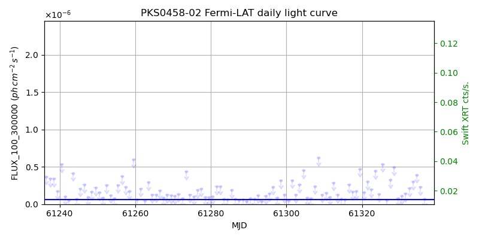
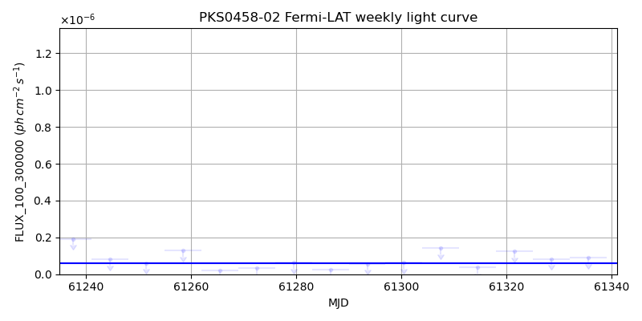
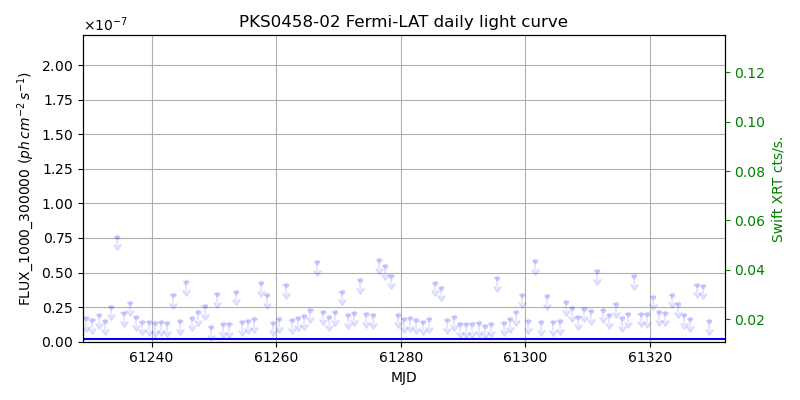
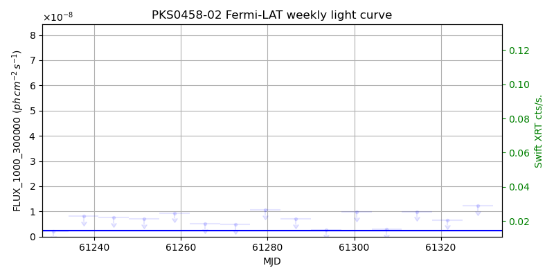

LAT Lightcurve site: https://fermi.gsfc.nasa.gov/ssc/data/access/lat/msl_lc/source/NRAO_190
Swift site: https://www.swift.psu.edu/monitoring/source.php?source=PKS0458-02
NED: Query
Time of last update of this page: UT: 2026-10-24 15:15 (MJD: 61337.636)
| Property | Value |
|---|---|
| R.A. | 4:42:38.64 |
| Dec. | -0:17:42.0 |
| z | 0.844 |
| 3FGL SpectrumType | PowerLaw |
| 3FGL PL Index | 2.41 |
| 3FGL Flux_100_300000 | 6.03e-08 1 / (s cm2) |
| 3FGL Flux_1000_300000 | 2.33e-09 1 / (s cm2) |
| 3FGL Flux >200 GeV | 1.30e-12 1 / (s cm2) |
| 3FGL Extrap. Crab >200 GeV | 0.01 |
| 3FGL Flux After EBL Absorption >200GeV | 4.11e-14 1 / (s cm2) |
| 3FGL EBL Crab Fraction >200GeV | 0.00 |

| MJD | dMJD | Flux | dFlux | Frac3FGL | FracCrab>200GeV | EBLFracCrab>200GeV |
|---|---|---|---|---|---|---|
| 61332.50 | 0.50 | 2.13e-07 | 0.00e+00 | 0.00 | 0.00 | 0.00 |
| 61333.50 | 0.50 | 3.03e-07 | 0.00e+00 | 0.00 | 0.00 | 0.00 |
| 61334.50 | 0.50 | 3.94e-07 | 0.00e+00 | 0.00 | 0.00 | 0.00 |
| 61335.50 | 0.50 | 2.29e-07 | 0.00e+00 | 0.00 | 0.00 | 0.00 |
| 61336.50 | 0.50 | 7.23e-08 | 0.00e+00 | 0.00 | 0.00 | 0.00 |

| MJD | dMJD | Flux | dFlux | Frac3FGL | FracCrab>200GeV | EBLFracCrab>200GeV |
|---|---|---|---|---|---|---|
| 61300.50 | 3.50 | 6.44e-08 | 0.00e+00 | 0.00 | 0.00 | 0.00 |
| 61307.50 | 3.50 | 1.42e-07 | 0.00e+00 | 0.00 | 0.00 | 0.00 |
| 61314.50 | 3.50 | 3.75e-08 | 0.00e+00 | 0.00 | 0.00 | 0.00 |
| 61321.50 | 3.50 | 1.26e-07 | 0.00e+00 | 0.00 | 0.00 | 0.00 |
| 61328.50 | 3.50 | 8.37e-08 | 0.00e+00 | 0.00 | 0.00 | 0.00 |

| MJD | dMJD | Flux | dFlux | Frac3FGL | FracCrab>200GeV | EBLFracCrab>200GeV |
|---|---|---|---|---|---|---|
| 61332.50 | 0.50 | 3.37e-08 | 0.00e+00 | 0.00 | 0.00 | 0.00 |
| 61333.50 | 0.50 | 1.59e-08 | 0.00e+00 | 0.00 | 0.00 | 0.00 |
| 61334.50 | 0.50 | 2.86e-08 | 0.00e+00 | 0.00 | 0.00 | 0.00 |
| 61335.50 | 0.50 | 5.15e-08 | 0.00e+00 | 0.00 | 0.00 | 0.00 |
| 61336.50 | 0.50 | 1.50e-08 | 0.00e+00 | 0.00 | 0.00 | 0.00 |

| MJD | dMJD | Flux | dFlux | Frac3FGL | FracCrab>200GeV | EBLFracCrab>200GeV |
|---|---|---|---|---|---|---|
| 61300.50 | 3.50 | 9.84e-09 | 0.00e+00 | 0.00 | 0.00 | 0.00 |
| 61307.50 | 3.50 | 2.89e-09 | 0.00e+00 | 0.00 | 0.00 | 0.00 |
| 61314.50 | 3.50 | 9.93e-09 | 0.00e+00 | 0.00 | 0.00 | 0.00 |
| 61321.50 | 3.50 | 6.63e-09 | 0.00e+00 | 0.00 | 0.00 | 0.00 |
| 61328.50 | 3.50 | 1.23e-08 | 0.00e+00 | 0.00 | 0.00 | 0.00 |
--------------------------------------------------------- Using user-supplied coords: 4:42:38.64 -0:17:42.0 2000 --------------------------------------------------------- FLWO UT night of: 2026-10-25 Local Sid. @ Midnight: 01:50 Sunset (-15.0) (local, UT): 18:49 01:49 Sunrise (-15.0) (local, UT): 05:27 12:27 Moonrise (local, UT): Moonset (local, UT): Moon phase: 0.99 --------------------------------------------------------- AzTime LSID UT Obj_el Obj_az Mn_el Mn_az Sep. --------------------------------------------------------- 18:49 20:39 01:49 -26.3 72.6 26.2 94.5 56.5 19:19 21:09 02:19 -20.1 77.3 32.4 98.6 56.3 19:49 21:39 02:49 -13.8 81.6 38.6 103.2 56.2 20:19 22:09 03:19 -7.4 85.7 44.7 108.4 56.0 20:49 22:39 03:49 -0.4 89.6 50.6 114.6 55.8 21:19 23:09 04:19 5.5 93.6 56.2 122.3 55.7 21:49 23:39 04:49 11.8 97.6 61.2 132.2 55.5 22:19 00:09 05:19 18.1 101.9 65.5 145.3 55.4 22:49 00:39 05:49 24.2 106.4 68.4 162.2 55.2 23:19 01:10 06:19 30.3 111.5 69.4 182.2 55.1 23:49 01:40 06:49 36.1 117.1 68.2 202.0 55.0 00:19 02:10 07:19 41.6 123.7 65.1 218.6 54.8 00:49 02:40 07:49 46.7 131.4 60.8 231.3 54.7 01:19 03:10 08:19 51.2 140.7 55.7 240.9 54.5 01:49 03:40 08:49 54.7 151.7 50.1 248.5 54.4 02:19 04:10 09:19 57.1 164.4 44.3 254.6 54.2 02:49 04:40 09:49 58.1 178.4 38.2 259.8 54.0 03:19 05:10 10:19 57.5 192.5 32.1 264.4 53.9 03:49 05:40 10:49 55.4 205.6 26.0 268.5 53.7 04:19 06:10 11:19 52.1 217.0 19.9 272.4 53.4 04:49 06:40 11:49 47.8 226.6 13.8 276.2 53.2 05:19 07:11 12:19 42.8 234.7 7.8 279.9 53.0 05:27 07:18 12:27 41.5 236.5 6.2 280.9 52.9 --------------------------------------------------------- Moon up all night, no dark time. Dark hours >55 deg.: 0.00